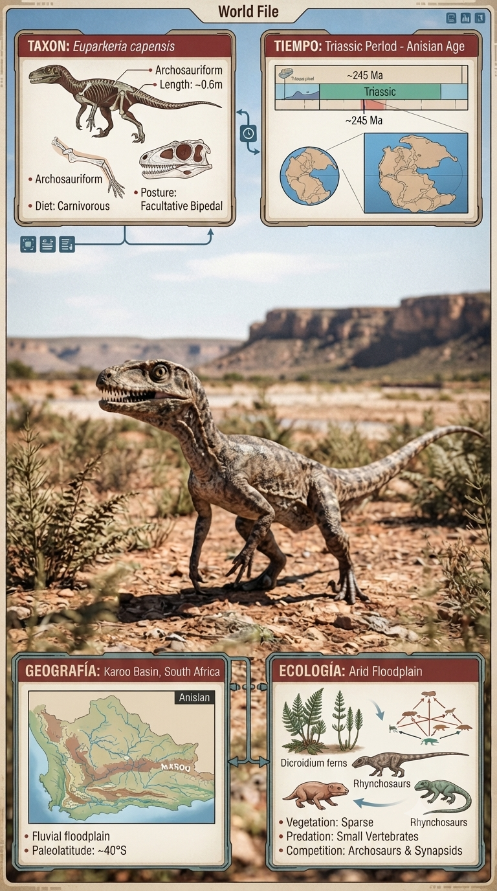
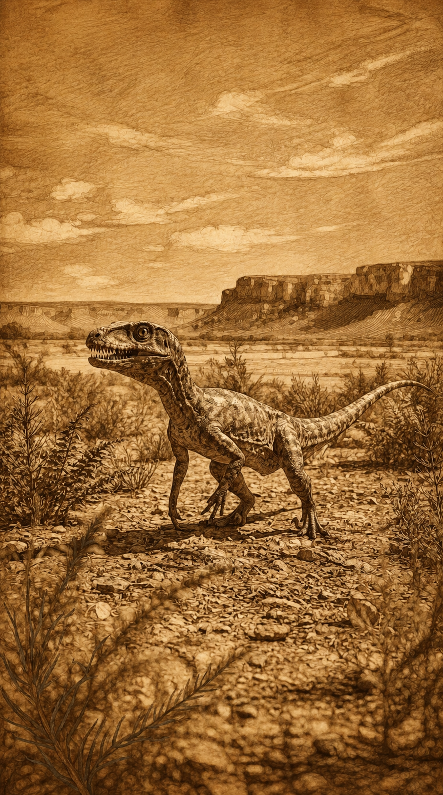

Paleoficha de PalEntropía


TAXÓN:
Euparkeria capensis
CLADO:
Archosauriformes (Avemetatarsalia / Pseudosuchia stem-group)
DIETA:
Carnívoro / Insectívoro (depredador activo de pequeñas presas).
TAMAÑO:
Entre 50 y 60 cm de longitud.
LOCOMOCIÓN:
Terrestre; facultativamente bípeda, con extremidades posteriores más largas que las anteriores.
TIEMPO:
Triásico Medio (Anisiense), aproximadamente hace 245 millones de años.
GEOGRAFÍA:
Cuenca del Karoo, Sudáfrica (Gondwana).
EQUIVALENCIA PALEOGEOGRÁFICA:
Regiones interiores de Pangea en recuperación tras la extinción del Pérmico-Triásico.
AMBIENTE PALEAOECOLÓGICO:
Llanuras de inundación recorridas por ríos meandriformes, con vegetación dispersa y marcada estacionalidad.
ECOLOGÍA:
• Flora: Bosques de coníferas, ginkgos y helechos resistentes a condiciones estacionales de aridez.
• Fauna secundaria: Comunidad de arcosauriformes y otros vertebrados que se diversificaban tras la gran extinción del final del Pérmico.
• Nichos: Pequeño depredador terrestre muy ágil. Su anatomía muestra rasgos basales que anticipan la evolución de dinosaurios y pterosaurios, incluyendo una locomoción parcialmente bípeda.
• Relaciones: Archosauriforme basal de enorme importancia evolutiva. Representa la transición hacia los arcosaurios dominantes del Mesozoico, sustituyendo progresivamente a los grandes sinápsidos paleozoicos.
CLIMA:
Wm20 (Triásico cálido). Temperaturas elevadas y una marcada estacionalidad de humedad que condicionaba la actividad de los vertebrados terrestres.
ESTADO ECOLÓGICO:
Estable. Euparkeria constituye uno de los taxones clave para comprender el origen de los arcosaurios modernos. Su arquitectura corporal sentó las bases evolutivas del éxito posterior de dinosaurios, pterosaurios y cocodrilomorfos.